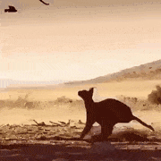
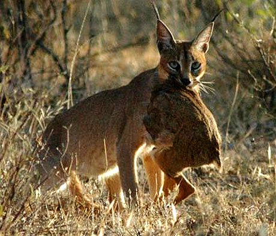
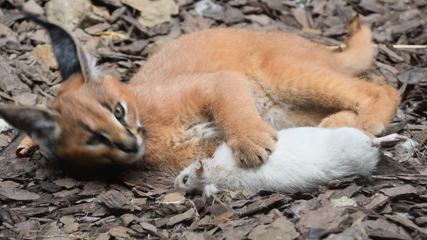
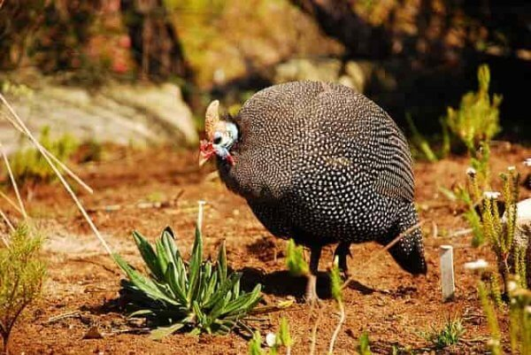
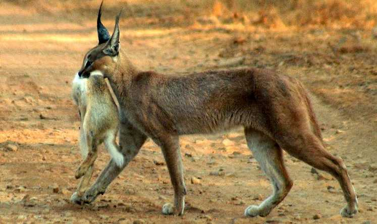
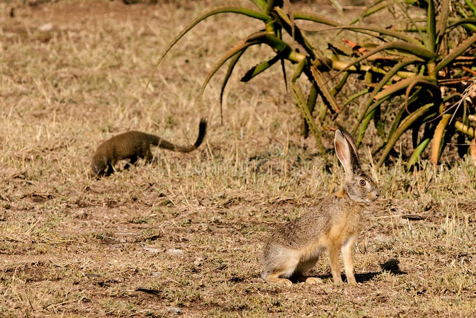
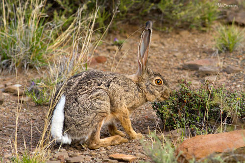

------ Alimentación ------

El Caracal es un animal robusto, compacto, con una musculatura poderosa, que puede alcanzar una gran velocidad en espacios pequeños de tiempo y de distancia, así como realizar portentosos saltos de incluso tres metros de altura que le permiten cazar numerosas aves. Además, trepan con bastante facilidad gracias a su fuerte complexión. Debido a estas características, estos animales carnívoros son excelentes cazadores y pueden comer pequeños mamíferos, como liebres y roedores. Pero, sin lugar a dudas, su presa favorita son las aves.Sin embargo, cabe destacar que las presas que cazan los caracales pesan menos de 5 kilogramos. No obstante, el caracal caza de forma muy sigilosa, por lo que cuando encuentra a su presa la acecha mientras se va acercando a ella muy lentamente.





